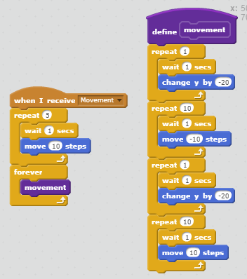

A band of aliens decide to invade the planet, Earth. A man, Io, decides to take matters on his own hands. The National Aeronautics and Space Administration heard about this and offered him a ship. It has taken months of development of the ship. But luckily, the day the aliens have decided to invade, your ship is set. NASA sends out you and now you are on your own. You will decide the fate of humanity and its future generations... The scoring impliment was the amount of points you get by each aliens you destroy. The use of the randomness is by the time when the red alien shoots its lasers. The game gets more difficult depending on the difficulty you have chosen. The harder the difficulty, the slower fire rate your ship will have. This gaves you a disadvantage on how fast you can shoot. The game ends if you destroy all the ships before they reach Earth's surface. You can lose if your ship gets destroyed by the alien's lasers or if they end up reaching Earth's surface.
We recreated this classic because it was simple, but still enjoyable to all. Some successful points in the development in our game was being able to use our own fonts and recreating the exact aliens in "Space Invaders" and putting them into our game One of the obstacles we faced was having multiple aliens on the screen, we did not know whether to clone or just duplicate the sprites. If we had more time, our game would be much better developed with less bugs and solid gameplay.

This provided algorithm allowed all the aliens to move at the same pace. The algorithm has all the aliens shift to one side and move down then shift to the other end of the side and down. Where the algorithm will repeat its process during the entire game. Without this algorithm, the aliens would have gone out of order which is one of the significance of the game.